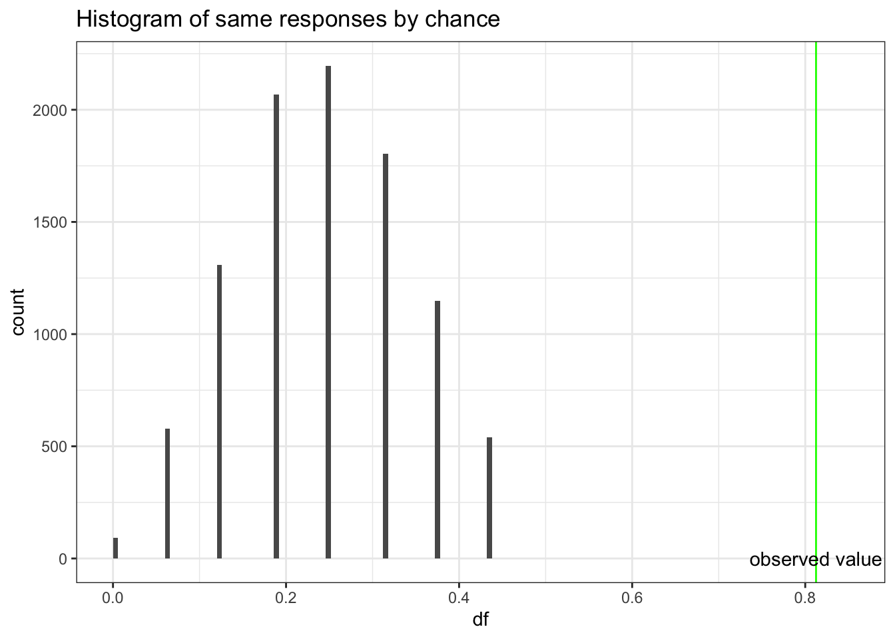

Chapter 5 Statistical inference
5.0.1 R packages required for this chapter
library(knitr)
library(tidyverse)
library(purrr)
library(epiR)
library(forestplot)5.1 Introduction
It should be remembered that quality study design and data collection are required before any meaningful statistical inference can take place. In other words, there are plenty of places for a study to go wrong before statistical inference is performed and these design topics will be discussed in later chapters.
For example, it is important to establish if
- the sample representative of the population that we’d like to draw inferences about?
- there systematic bias created by selection, misclassification or missing data at the design or during conduct of the study?
- there are known and observed, known and unobserved or unknown and unobserved variables that contaminate our conclusions?
Adoption of many research findings, by individual researchers, clinicians, public health experts, professional societies, guideline writers and regulatory agencies, are often unequivocally determined by a deification of p < 0.05. While the many limitations and large potential for misinterpretations with this approach have long been appreciated in the statistical literature, these issues are considered somewhat esoteric and of lesser importance in the clinical literature.
| Common and important statistical inference misconceptions |
|---|
|
Statistical inference is the process of generating conclusions about a population from a sample, without it we’re left simply within our data. As samples are inherently noisy, this is an essential process in going from data -> knowledge. Probability models connect sample data and populations and are therefore an essential element of statistical inference. In probability theory, the model is known, but the data are not. In statistics we have the data, not the data generating model and want to learn the underlying “truth.”
Example - The wrong probability model leading to the wrong inference
Consider this well known and tragic case of a British mother and lawyer who had 2 children die of sudden infant death syndrome (SIDS). From this data we would like to infer whether or not this occurence is beyond the play of chance or whether Ms. Clark should be tried for infanticide.
An expert testified that the probability of SIDS = 1 / 8,500 and therefore the probability of 2 deaths in 1 family was (1 / 8,500)\(^2\) or 1 in 72 million. The inference from this argument is that the probability of this occurring by chance, or “naturally,” was vanishingly small. The mother was convicted, undoubtedly in part based on this expert testimony.
Do you agree with this inference?
The expert has assumed an underlying probability model that views these 2 deaths as being independent and identical distributed (iid). But these 2 SIDS deaths are not independent events, rather they have a strong family occurrence, possibly related to both genetic and common environmental factors. In fact, the risk of a 2nd SDIS death in the same family is not 1 in 8500 but about 1 in 300.
There are about 700,000 annual UK births and therefore approximately 82 first SIDS deaths. If SIDS families decide to have a 2nd child then it is expected that a 2nd death will occur in a little less than 4 years (4 * 82 = 320 2nd births in a SIDS family). This more “informed” probability model predicts a 2nd SIDS death in the same family far more frequently than that implied by a 1 in 72 million chance.
It is impossible to say exactly how much damage the choice of the original probability model and the subsequent incorrect inference made to the conviction and the ensuing unfortunate circumstances (prison and eventual maternal death) but it seems likely to have been far from trivial.
In addition to discussion of the advantages and limitations of the various statistical inference paradigms, this chapter will provide several examples illustrating how even landmark trials in prestigious journals can present statistical problems that substantially undermine their conclusions or even make them unreliable. The goal of this chapter is to encourage a more critical assessment and appraisal of the underpinnings of statistical inference in contemporary medical research.
5.2 Null Hypothesis Significance Testing
The standard scientific approach to statistical inference depends on the two key components of p values and null hypothesis significance testing (NHST). Despite well recognized limitations(Amrhein, Greenland, and McShane 2019)(Wasserstein, Schirm, and Lazar 2019), NHST was an important advancement in scientific reasoning as it attempted to codify scientific decision making and elevated it above the historical subjective decision-making process. The NHST framework is summarized in Table 1.
NHST framework presented in a 2 X 2 table

The archetypal NHST roadmap is to set the α or type I (false positive) error rate typically to 5% and the β or type II (false negative) error rate 20% at the design level. While this approach will limit the number of errors made in the long run, hence the term “frequentist” methods, it fails to provide an inferential measure of the evidence for a given experiment. This problem has seen the development of an ersatz solution, the (in)famous p value(S. N. Goodman 1999a). The p value is the probability of getting a result (specifically, a test statistic) at least as extreme as what was observed if every model assumption, in addition to the targeted test hypothesis (usually a null hypothesis), used to compute it were correct. As test statistics are composed of an effect size divided by a standard error, a small p value may occur when there is a trivial effect size but a very large sample size leading to a small standard errors. Given that these characteristics don’t reflect what most consumers of medical research want, it is perhaps not surprising that misinterpretations of the p value abound.
| Common and egregious misinterpretations of p values |
|---|
|
While these misinterpretations are increasingly acknowledged and the use of confidence intervals encouraged, it is important to understand that confidence intervals are not a complete panacea. It is easiest to begin with what the CI is not telling us. It does not mean there is a 95% probability that the true effect size lies in this interval. While that is what we might like the 95% CI to provide, such an interpretation would require a Bayesian mindset that considers prior probabilities and assumes that the true effect is not a fixed but unknown quantity but rather a random variable.
Moreover, the problems with p values are not limited to misinterpretations of its definition.
| Interpretative issues from the combined p values and NHST paradigm |
|---|
|
One reason for the popularity of the NHST paradigm, despite its these limitations, is that it appears to avoid the conundrum of inductive reasoning and apparently represents the deductive Popperian view of scientific learning through falsification. However, this is more illusory than real as typically the researcher believes the alternative hypothesis is true and then constructs a straw man null hypothesis which (s)he doesn’t believe and hopes it is proven false. The alternative hypothesis is then accepted without any further attempt at falsification. The reality therefore resembles more a confirmationist than falsificastionist approach(Gelman 2014). Other major NHST limitations are the excessive weight given to the null hypothesis, as known as nullism(Greenland 2017), the non-specific nature of the accepted alternative hypothesis and a forced dichotomized decisional process(Wasserstein and Lazar 2016). The institutionalized bias of nullism can result in a blunting of scientific discovery process, an endorsement of an artifical certainty of no effect and an aversion to the existence and uncertainty surrounding non-null hypotheses. While NHST describes a deductive behavior to limit mistakes for repeated experiments in the long run, its biggest limitation as mentioned above is a lack of an inductive measure of the evidence for a given experiment. The incorporation of the p value into the NHST paradigm attempts to address this shortcoming but the presentation of these two concepts don’t represent a unified theory, but actually are separate, and perhaps irreconcilable schools(S. N. Goodman 1999a). In short, p values can’t be expected to provide both a “short run” perspective, which is evidential and inductive and a long-run perspective, which is error-based and deductive.
Example 1 - Incorrect p value interpretation - Don’t compare p values A 2011 study reported that selective COX-2 inhibitors (NSAIDs) were associated with atrial fibrillation (RR 1.20, 95% CI 1.09 - 1.33, p<0.01) A later 2013 study concluded “use of selective COX-2 inhibitors was not significantly related to atrial fibrillation occurrence” (RR 1.20, 95% CI 0.97 - 1.47, p=.23). These authors went on to elaborate why the results were different - slightly different populations, etc. The fundamental question is " Are the 2 results are really different?" While one study reached statistical significance and the other didn’t, making statistical inference based on comparing P values from separate analyses is incorrect. The correct approach is discussed by Altman and Bland and involves a formal test for interaction. The calculations comparing relative risks or odds ratios are analyzed on the log scale because the distributions of the log ratios tend to be those closer to normal than of the ratios themselves. The comparison of these two summary statistics is well described in the Altman and Bland article and can be operationalized in R as follows:
inter <- function(RR, lci, uci){ #enter RR, lci, uci as vectors of length 2
RR <- log(RR)
lci <- log(lci)
uci <- log(uci)
width <- abs(lci -uci)
se <- width / 3.92
delta <- RR[1] - RR[2]
se_delta <- sqrt(se[1]^2 + se[2]^2) #variance of a difference = sum of individual variances
ci_delta <- delta + c(-1,1) * 1.96 * se_delta
z <- delta / se_delta
pvalue <- 2* pnorm(z)
RRR <- exp(delta)
ci_RRR <- exp(ci_delta)
return (list("z value for interaction test" = z, " associated p value" = pvalue,
"Relative risk ratio" = RRR, "95% CI" = ci_RRR))
}
inter(c(1.27,1.20), c(1.20,0.92), c(1.34,1.48))## $`z value for interaction test`
## [1] 0.4554
##
## $` associated p value`
## [1] 1.351
##
## $`Relative risk ratio`
## [1] 1.058
##
## $`95% CI`
## [1] 0.8292 1.3508From this analysis, it is obvious that there is no statistically significant difference between the 2 results and rather than trying to explain non-existent differences, the authors should have concluded that their results, while under powered, were entirely compatible with the previous results.
Data visualization rather simply but elegantly and convincingly demonstrates the consistency of these two results,
dat <- matrix(c(1.27, 1.20, 1.34, 1.20, 0.92, 1.48), nrow = 2, byrow = TRUE,
dimnames = list(c("2011 study","2013 study"), c("coef", "lower", "upper")))
clrs <- fpColors(box = "royalblue",line = "darkblue", summary = "royalblue")
forestplot(rownames(dat), mean=dat[,1], lower=dat[,2], upper=dat[,3],
col = clrs,
grid = structure(c(1), gp = gpar(lty = 2, col = "#CCCCFF")),
xlab = "RR")Example 2 - Incorrect p value interpretation - p > 0.05 \(\neq\) no effect
In the STICH trial, a total of 1212 patients with an ejection fraction < 35% and coronary artery disease amenable to coronary artery bypass surgery (CABG) were randomly assigned to medical therapy alone (602 patients) or medical therapy plus CABG (610 patients). The primary outcome was death from any cause. The primary outcome occurred in 244 patients (41%) in the medical-therapy group and 218 (36%) in the CABG group (hazard ratio with CABG, 0.86; 95% CI, 0.72 to 1.04; P = 0.12). The abstract conclusion stated “In this randomized trial, there was no significant difference between medical therapy alone and medical therapy plus CABG with respect to the primary end point of death from any cause.”
With a p value > 0.05, the authors have interpreted this as a “negative” study and concluded “no significant difference between medical therapy alone and medical therapy plus CABG.” However, this is only a negative study when viewed through the artificially dichotomized lens of significance testing. Although confidence intervals have been reported in addition to the p value, they have been interpreted in the same restricted dichotomized manner as p values, namely that inclusion of a HR = 1 in the confidence interval equates to a non-significant finding.
In fact, these results actually support the opposite conclusion, that a difference between the two treatments exists, and it favors CABG! To help appreciate this new interpretation, remember the choice of p < 0.05 as the definition of statistical significance is arbitrary and merely chosen on a tradition borrowed from agricultural research in the 1920’s. Different thresholds (p values) for statistical significance could be chosen and they will directly impact the width of the confidence intervals. This relationship can be shown graphically and this p value graph underscores that decision making is better appreciated as a continuous rather than binary process. For example, accepting an 83% CI provides a statistically significant interval since it excludes the null value of HR=1.
pv_graph <- function(hr, uci, lci) {
se <- (log(uci)-log(lci))/(2*1.65)
x <- seq(0.01, 0.50,by = .005)
p1 <- exp(log(hr) - (qnorm(x) * se))
p2 <- exp(log(hr) + (qnorm(x) * se))
p <- data.frame(x, p2, p1)
g <- ggplot(p, aes( p2, x)) +
geom_line() +
geom_line(aes(p1, x)) +
scale_x_continuous(trans='log10') +
ylab("p value \n one sided") +
xlab("Hazard ratio (Log scale)") +
labs (title="P value function") +
geom_hline(yintercept=c(.005,.025,0.05,0.10), color = "red") +
annotate("text", x=.7,y=.01, label="99% CI") +
annotate("text", x=0.74,y=.04, label="95% CI") +
annotate("text", x=0.78,y=.06, label="90% CI") +
annotate("text", x=.82,y=.11, label="80% CI") +
geom_vline(xintercept=1.0, color = "green") +
annotate("text", x=1,y=.4, label="null hypothesis") +
theme_bw()
return(g)
}
stich_pv_5 <- pv_graph(0.86, 1.04, 0.72) +
labs (title="Stich trial results 2011",
subtitle = "P value function for HR = 0.86, 95% CI 0.72 to 1.04")
stich_pv_5This figure shows that accepting an 83% CI provides a statistically significant interval since it excludes the null value of HR=1. Of course, this doesn’t supply conclusive evidence for the superiority of CABG but does show the presence of some weight in its favor in contrast to the typical interpretation of a dichotomized p value > 0.05. A more nuanced conclusion would be that due to the limited statistical power, definitive evidence for the superiority of either technique is not available. However the best estimate is a 14% reduction in mortality with CABG, with sampling variability such that the benefit may be as large 28% or even a 4% increased risk.
Perhaps this figure of a cultural icon will help avoiding this error.
5.3 S values
Even when p values are correctly understood, their scaling can make an appreciation of their strength of evidence against the null hypothesis problematic. As seen in the figure below from (Rafi and Greenland 2020)
the same absolute change in p value is associated with vastly different meanings for differences in pvalues near 1 compared to those near 0. Enhanced understanding of the strength of the evidence against not only the null hypothesis but against any specific alternative hypotheses can be more easily appreciated by considering p values not on their natural probability scale from 0 to 1 but on a scale that reflects the probability of successive tosses, S, of an unbiased coin showing only heads, p = (1/2)s. This is known as the binary Shannon information, surprisal or S value which can be rearranged as S = log2(1/p) = −log2(p) and is a measure of the evidence against the test (null) hypothesis.
STICH example continued
Returning to the STICH example, A graph of S versus the HR reveals that evidence against any hypothesis is minimized at the point estimate (S=0 at HR =0.86).
s_graph <- function(hr, uci, lci){
se <- (log(uci)-log(lci))/(2*1.65) #.86 0.72 to 1.04 (log se)
x <- seq(0.01, 0.50,by = .005)
lci <- exp(log(hr) - (qnorm(x) * se))
uci <- exp(log(hr) + (qnorm(x) * se))
lci <- rev(lci)
hr <- rev(c(uci, lci))
yy <- 2*x
yy <- c(yy,rev(yy))
ss <- -log(yy, base=2)
df1 <- data.frame(hr,ss)
df1 <- df1[-297,]
s <- ggplot(df1, aes( hr,ss)) +
geom_line() +
xlim(0.01,1.2) +
scale_x_continuous(trans='log10') +
ylab("Bits of information against HR (binary S value)") +
xlab("Hazard ratio (Log scale)") +
labs (subtitle = "S-Values (surprisals) for a range of hazard ratios (HR)") +
geom_vline(xintercept=1.0, color = "green") +
annotate("text", x=1,y=.4, label="null hypothesis") +
theme_bw()
return(s)
}
stich_s_5 <- s_graph(0.86, 1.04, 0.72) +
labs(title="Stich trial results 2011") +
annotate("text", x=.8,y=1, label="Maximum likelihood estimate (HR=0.86)\n has the least refutational evidence \n against it (0 bits)") +
geom_segment(aes(x = .86, y = 0.8, xend = .86, yend = 0.015),
arrow = arrow(length = unit(0.5, "cm")),color="red")
stich_s_5There is also very little evidence against a 10% decrease with CABG. Surprisingly, there is even less evidence against the hypothesis of a 25% decrease with CABG than there is against the null hypothesis which we have been told we should accept! The graph also shows a clinically meaningful increased risk (arbitrarily defined as HR =1.15 with CABG is unlikely, equating to getting about 6 heads in a row from a fair coin. In fact, a putative 32% benefit has the same amount of refutational evidence against it as a 10% increased risk. This example speaks again to the observation that the difference between “significant” and “not significant” is not itself statistically significant(Gelman and Stern 2006). Examined from this perspective, despite the authors’ interpretation of the STICH study as negative, it would have been eminently reasonable, based on these results, to have offered offer CABG to eligible patients while awaiting the accumulation of additional evidence.
The confirmation of this approach was provided by a 2016 STCIH publication which had increased power due to a longer follow-up and showed that the rates of death from any cause, death from cardiovascular causes, and death from any cause or hospitalization for cardiovascular causes were significantly lower over 10 years among patients who underwent CABG in addition to receiving medical therapy than among those who received medical therapy alone (HR 0.84; 95% CI 0.73 to 0.97).
5.4 Two views of probability
Two views of probability
In the NHST paradigm, since parameters considered as fixed but unknown quantities, we can’t make probability statements about them. In this context, probability is limited to sampling variability, i..e. in the long run proportion of times an event occurs in independent, identically distributed (iid) repetitions. Answers questions like “What should I decide given my data controlling the long run proportion of mistakes I make at a tolerable level.”
In the Bayesian paradigm, parameters are random variables that follow the rules of probability. In this context, probability is a calculus of beliefs that answer questions like “Given my subjective beliefs and the objective information from the data, what should I believe now?”
Basic Probability Example Using R
Background: During an exam suspected that one student is copying answers from another student. There is a choice of 4 answers for each question.
The Evidence: On the 16 questions missed by both students, 13 of the answers were the same.
Question: Is this data beyond the play of chance? Did the student cheat?
Answer: There is a 1 in 4 probability that the students will randomly choose the same answer. For 16 questions, one would expect 4 answers to be the same but there is obviously variability in this expected value. One could use chisq.test as in section 4.1 but with small sample using the binomial distribution describes more fully this scenario and help can be found with help(rbinom).
# chi sq test
x <- c(13,3)
chisq.test(x, p = c(.25,.75))## Warning in chisq.test(x, p = c(0.25, 0.75)): Chi-squared approximation may be
## incorrect##
## Chi-squared test for given probabilities
##
## data: x
## X-squared = 27, df = 1, p-value = 2e-07# to see the variability draw 10000 times from a sample of 16 with a probability = 1/4
df <- rbinom(10000,16,.25)/16
#plot the histogram
ggplot(as.data.frame(df), aes(df)) +
geom_histogram(breaks=seq(0, .45, by = .006)) +
xlim (c(.0,.85)) +
ggtitle("Histogram of same responses by chance") +
geom_vline(xintercept=.8125, color = "green") +
annotate("text", x=.8125,y=.50, label="observed value") +
theme_bw()
Based on probabilities,a proportion of 0.8125 agreement would be very unusual if second student was simply guessing, so we conclude that second student was not guessing. However, we can’t extrapolate this to conclude there was cheating. If you don’t know the answer to a question on an exam, you rarely guess completely at random. Hopefully you will make an educated guess & some wrong answers might be more logical than others. This could explain the large proportion of matches on wrong answers between the two students. So this evidence is not convincing evidence that the student cheated, but we know that he did not just guess.
5.4.1 Basic rules of probability
As the rules of probability are the basic building block for Bayesian inference, let’s quickly review them.
- By definition, probabilities must be between 0 and 1
- If an event occurred then P = 1
- If an event can’t occur then P = 0
- P(A) + P(\(\overline{A}\)) = 1 where P(\(\overline{A}\)) is the compliment of P(A)
- If 2 events are mutually exclusive then p(A U B) = p(A) + p(B) U = union
- If 2 events are not mutually exclusive then P(A U B) = P(A) + P(B) - P(A ∩ B) n = intersection (addition rule)
- P(A ∩ B) = P(A|B) * p(B) (multiplication rule)
- P(A) = P(A n B) + P(A n \(\overline{B}\)) (total probability rule)
The addition, multiplication and total probability rules are easily understood with the use of Venn diagrams.
Figure 5.1: Addition rule
Figure 5.2: Multiplication rule
Figure 5.3: Total probability rule
5.4.2 Bayes Theorem
From these rules of probability, it is easy to develop the basic form of Bayes Theorem.
1st application of multiplication rule:
\[\begin{equation}
P(A ∩ B) = P(A|B)*P(B)
\tag{5.1}
\end{equation}\]
2nd application of multiplication rule:
\[\begin{equation}
P(B ∩ A) = P(B|A)*P(A)
\tag{5.2}
\end{equation}\]
From (5.1) and (5.2):
\[\begin{equation}
P(A|B)*P(B) = P(B|A)*P(A)
\tag{5.3}
\end{equation}\]
or
\[\begin{equation} P(A|B) = \frac{P(B|A)*P(A)}{P(B)} \tag{5.4} \end{equation}\] which is Bayes Theorem where occasionally the denominator is expanded using the rule of total probability
\[\begin{equation} P(A|B) = \frac{P(B|A)*P(A)}{P(B|A)*P(A)+P(B|\overline{A})*P(\overline{A})} \tag{5.5} \end{equation}\]
Example 1 Bayes Theorem
This example comes from the excellent book by Daniel Kahneman “Thinking fast, thinking slow”(Kahneman 2011) which explores cognitive biases. Steve is described by his neighbor as a shy individual, very helpful but he has little interest in people. He likes things in their proper order, and is very detailed about his work. Do you think Steve is more likely to be a librarian or a farmer?
It may seem that Steve is more likely to be a librarian and most people would agree with this conclusion but that’s ignoring the background distribution of librarians and farmers. Bayes theorem with its form of updating a prior probability intrinsically avoids this error of ignoring the baseline context or probability.
Before considering Steve’s characteristics, the odds of male farmers to male librarians may be assumed to be in the order of 20 to 1. So based on this information, Steve is statistically more likely to be a farmer. Let us explore this is in more detail with Bayes Theorem.
Let A = probability that Steve is a librarian.
Recall odds = P(event) / P(\(\overline{event}\)) or probability = odds / (odds +1) so P(A) = 1/21 and P(\(\overline{A}\)) = 20/21
Let B = Steve’s characteristics
What is P(B |A)? This is the probability that the neighbor would describe Steve in these terms if he was indeed a librarian. This is unknown but is presumably close to 1. Let’s assume 0.95. Looking at equation (5.5), the only term missing on the left of the equation is P(B |\(\overline{A}\)), the probability that Steve would have these characteristics if he was not a librarian. Again this is unknown but presumably this would be less than P(B |A), let’s assume 0.3.
We may now substitute into (5.5) and calculate our updated probability that Steve is a librarian given his characteristics.
P(A | B) = \(\frac{(0.95) * (1 /21)}{(0.95) * (1 /21) + (0.3) * (20/21)}\) = 0.136
Bayes Theorem has obliged us to consider the importance of the baseline rate, or context, which in this case is that farmers are a much more common vocation among males. However Steve’s characteristics have shifted our probability that he is a librarian from 4.8% to 13.6% but it is still much more likely that he is a farmer.
This is at the essence of diagnostic testing where a positive test is unlikely to mean that disease is present if the baseline disease prevalence is low in the population being studied. Hence why diagnostic testing may be sometimes be inappropriate.
Example 2 Bayes Theorem and Diagnostic Testing
25 year old MSc epi student got a tattoo on spring vacation in Cancun. Asymptomatic but is screened for Hepatitis C for an insurance policy. Test positive (sensitivity = 95%, specificity = 98%). Assuming the prevalence of HepC in this population is 0.1%. What is the probability (s)he truly has HepC?
This problem can often be most easily understood by completing a 2X2 table as follow
| Disease + | Disease - | ||
|---|---|---|---|
| Test + | 95 | 1998 | 2093 |
| Test - | 5 | 97902 | 97907 |
| 100 | 99900 | 100000 |
and then calculating the positive predictive value, P( D | T), calculated from the horizontal e first line of the above 2X2 table, = 95 / 2093 = 0.045.
Alternatively one could directly apply Bayes rule as expressed in equation (5.5),
\[\begin{equation}
P(D|T) = \frac{P(T|D)*P(D)}{P(T|D)\*P(D)+P(T|\overline{D})*P(\overline{D})} = \frac{.95*.001}{.95*.001 + .02*.999} = 0.045
\end{equation}\]
It can be appreciated that even though the test has good sensitivity and specificity, the very low prevalence means that a positive test is most likely a false positive as the probability of a having disease given the positive test is only 4.5%.
It is key to remember the distinction between test sensitivity (P(T|D)) and positive predictive value (P(D|T)) and that P(T|D) ≠ P(D|T). The confusion between these two probabilities is the source of a common bias known as the prosecutor’s fallacy in which the probability of the evidence given innocence is confused with the probability of innocence given the evidence (P(E|I) ≠ P(I|E))
In an analogous manner, it may be appreciated that the p value = P(Data | Ho is true) does NOT provide what most clinicians are looking for which is instead P(Ho is true | Data).
5.5 Bayesian reasoning to understand “Why Most Published Research Findings are False”
John Ioannidis is one of the world’s most cited authors (>325,000 citations) and his 2005 paper “[Why Most Published Research Findings are False]” (https://journals.plos.org/plosmedicine/article?id=10.1371/journal.pmed.0020124&xid=17259,15700019,15700186,15700190,15700248) has been cited almost 10,000 times and viewed online over 3 million times. The interpretation of the number of false conclusions in medical literature can be seen as analogous to the examination of diagnostic tests and this approach will be used to understand how Ioannidis reached his conclusions about the lack of veracity of many published research papers.
Figure 5.4: Analogy between diagnostic testing and research findings
Based on the diagnostic example above, it can be appreciated that a key determinant of the number of false findings will depend greatly on our beliefs concerning the prevalence of positive studies. It is only a minority of studies which will have positive results and this undoubtedly varies function of the research design. Even for the highest quality pre-selected studies, phase III RCTs, there is not more than a 50:50 chance that a study will ultimately yield a positive results. With other designs, the ratio of positive to negative studies may be considerably lower. The number of true positive studies will be a function not only of the baseline prevalence positivity, but also power (sensitivity) and significance level (specificity) characteristics, along with possible study biases.
Figure 5.5: Positive predictive values for various research designs and parameter
In Figure 5.5, Ioannidis proposes some relationships between the odds (R) of a true (alternative hypothesis) to not true relationship according to study design, bias (u) and power (1 - \(\beta\)) where PPV = positive predictive value. Before examining the general formula, let’s numerically reproduce one of the PPVs, for example consider the adequately powered exploratory epidemiology study. Imagine there are 1,000 such studies and R = 1 / 10, therefore the probability of a positive study = R / (R+1) = 91 and 73 will discovered (80% power). The probability of a negaitve study = 1 /(R +1) and in this case there are 909 negative studies but 45 (5%) will be false positive. This is shown in the following figure and the PPV = 73 / 128.
Figure 5.6: Adequately powered exploratory epidemiology study no bias
Now imagine, as in most studies there is a bias and assume as in Figure 5.5 that is 30%. Bias most often leads to increased positive study results. This will result in a shift of 30% of studies from cells C and D to A and B, respectively as shown in the following figure.
Figure 5.7: Adequately powered exploratory epidemiology study no bias
The PPV is now = 78 /382 = 0.20 as in Figure 5.5. from Ioannidis’ original publication. Ioannidis gives the general formula to calculate PPV as a function of R, power, \(\alpha\) and bias as follows
Figure 5.8: General Assocation of Research Findings and True Relationships in the Presence of Bias
While some of the assumptions and corollaries that Ioannidis has made have been the subject of criticisms (S. Goodman and Greenland 2007), the overarching usefulness of his approach and its basic premise built on Bayesian reasoning is, in my opinion, both sound and useful. Here is a simple R function that will calculate the positive predictive value for a positive study finding given a particular research design. Here we calculate the PPV for the above epidemiologic study with 30% bias as above.
study_ppv <- function(R, u, beta, alpha=0.05, c=1000){
# R = odds of true relationship
# u = bias
# beta = type II error
# alpha = type II error
# enter data as decimals
pD <- R/(R+1)
p_noD <- 1/(R+1)
A <- (c*(1 - beta)*R + u*c*beta*R)/(R + 1)
C <- c(1 - u)*c*beta*R/(R + 1)
B <- (c*alpha + u*c*(1 - alpha))/(R + 1)
D <- (1 - u)*c*(1 - alpha)/(R + 1)
ppv <- A / (A + B)
t <- paste("Based on Ioannidis' 2005 paper, the positive predicted value of a true relationship is", round(ppv,3))
t1 <- matrix(round(c(A,B,C,D),0), nrow = 2, byrow = TRUE)
list(Result = t, Table=t1)
}
study_ppv(.1,.3,.2) ## $Result
## [1] "Based on Ioannidis' 2005 paper, the positive predicted value of a true relationship is 0.204"
##
## $Table
## [,1] [,2]
## [1,] 78 305
## [2,] 13 605Can also reproduce the accompanying plot
alpha <- 0.05
beta <- 0.2
c <- 1000
u <- 0.3
R <- seq (0,1, length.out = 21)
A <- (c*(1 - beta)*R + u*c*beta*R)/(R + 1)
B <- (c*alpha + u*c*(1 - alpha))/(R + 1)
ppv <- A / (A + B)
df <- data.frame(x=R, y=ppv)
df %>%
ggplot(aes(x,y)) +
geom_line() +
geom_segment(aes(x = .1 , y = 0, xend = .1, yend = .204)) +
labs(x="Pre study odds", y="Post study probability (PPV)") +
ggtitle("Probability Research Finding Is True as a Function of the Pre-Study Odds", subtitle = "(Bias =0.2)") +
theme_bw()Finally, we can also reproduce Ioannidis’ Figure 1a which displays post study probability as a function of pre study odds and the degree of bias.
t <- rerun(4, df) %>%
map_df( ~ tibble(.), .id = "dist", x.x ="x") %>%
mutate(bias = ifelse(dist == "1", .05,
ifelse(dist == "2", .2,
ifelse(dist == "3", .5,
ifelse(dist == "4", .8, "NA"))))) %>%
mutate(alpha=0.05, beta=0.2, c=1000, bias=as.numeric(bias)) %>%
mutate(A = (c*(1 - beta)*x + bias*c*beta*x)/(x + 1)) %>%
mutate(B = (c*alpha + bias*c*(1 - alpha))/(x + 1)) %>%
mutate(ppv = A / (A + B))
ggplot(t, aes(x,ppv,color = as.factor(bias))) +
geom_line() +
labs(x="Pre study odds", y="Post study probability (PPV)") +
labs(color='Level of bias') +
labs(caption = "power = 80%") +
ggtitle("Probability Research Finding Is True as a Function of the Pre-Study Odds", subtitle = "Varying levels of bias (alpha = 0.05, beta = 0.2)") +
theme_bw()5.6 Bayesian data analysis and statistical inference
Unlike the standard frequentist approach described above, Bayesian inference is not based on statistical significance testing, where effects are compared to a “null hypothesis.” Standard (frequentist) procedures fix the working hypotheses and, by deduction, make inference on the observed data:
- If my hypothesis is true, what is the probability of randomly selecting the data that I actually observed? If small, then deduce weak support of the evidence to the hypothesis
- Assesses Pr(Observed data | Hypothesis)
On the contrary, the Bayesian philosophy proceeds fixing the value of the observed data and, by induction, makes inference on the unobservable hypotheses, which is ultimately what both clinicians and researchers are most interested in.
- What is the probability of my hypothesis, given the data I observed? If less than the probability of other competing hypotheses, then weak support of the evidence for the hypothesis
- Assesses Pr(Hypothesis | Observed data)
Advantage of inductive reasoning: conclusions about unobserved states of nature are broader than the observations on which they are based; using this reasoning will generate new hypotheses and learning new things. The drawback is cannot be sure that what we conclude is actually true, a conundrum known as the problem of induction. Bayesian reasoning combines a belief calculus (prior) and an evidential calculus (likelihood ratio) where each individual is entitled to their own, subjective evaluation. According to the evidence that is sequentially available, individuals tend to update their beliefs. In identifiable problems as more data accumulates the subjective component diminishes and divergent opinions converge. In non-identifiable problems (missing data, measurement error, unmeasured confounders) priors remain important even as more data accumulates.
There are two essential defining characteristics of the Bayesian paradigm. First, the Bayesian framework treats unknown parameters as random variables, thereby offering a probabilistic view of their assessment and of the associated uncertainty. The other crucial aspect of the Bayesian paradigm is the formalism of past knowledge that is incorporated with current data via Bayes Theorem, thereby providing a coherent approach to updating scientific knowledge that mirrors our normal sequential learning process.
Figure 5.9: Bayes theorem
This prime advantage of Bayesian reasoning is summarized by the following pithy aphorism
“Today’s posterior is tomorrow’s prior”
which reflects the sequential learning process of the method.
Typically, the integration of the study data, known as the likelihood function, over the prior distribution space requires the use of numerical methods, most often Monte Carlo Markov Chain techniques. However in special situations, such as when both the prior and the likelihood are assumed to be normally distributed, closed form analytical solutions, known as Bayesian normal conjugate analyses are possible. In a closed-form analysis, the final (posterior) mean is simply a weighted average of both the prior mean and the sample mean with the weights being directly proportional to the respective precisions (inverse variance).(Gelman et al. 2014)
The flexibility of Bayesian analyses permits a straightforward calculation of the posterior probability of the measured effect size exceeding any given threshold by a calculation of the area under the curve (AUC) to the right of the selected threshold. The visualization of these posterior probability functions greatly assists data interpretation.
Other advantages of a Bayesian approach are greater flexibility in modeling complex processes, including hierarchical modeling, handling of missing data, and evaluating and comparing competing models. From the perspective of randomized clinical trials (RCTs), these advantages may translate into concrete benefits at the design, monitoring, analytical and interpretative phases. Concretely, these benefits may include possible sample size reduction via the inclusion of prior information and possible adaptive trial designs, enhanced monitoring for possible early terminations, direct user-friendly probability statements probability statements about predictive probabilities and a decision theory environment that incorporates both benefits and loss functions for enhanced clinical decision making.
Against these benefits, several limitations of the Bayesian method have been raised. Initially, the evaluation of these high-dimensional posterior distributions was previously difficult and involved approximations and numerical methods but more recently the process has been simplified by high speed simulation methods allowing a wide expansion of its clinical applicability. The remaining major objection to the Bayesian approach is its reputed subjectivity due its incorporation of prior information. In fact, this is not always a bona fide deterrent. As priors must be transparently presented and are often based on pre-existing objective research findings, completely inappropriate and arbitrary priors are easily identified and excluded from consideration. Moreover, a range of priors can be tested that will permit an assessment of the robustness of the final (posterior) inferences. By comparison, there are multiple assumptions in frequentist analyses which are neither transparent nor properly tested including an assumption of the data generating process that in theory needs to be infinitely replicated to allow p-values and confidence limits to be computed. A rather unflattering comparison of the frequentist and Bayesian paradigms and assumptions has been proposed and is summarized below.
Comparisons of underlying assumptions
• Frequentist = subjectivity1 + subjectivity2 + objectivity + data + endless arguments about everything
• Bayesian = subjectivity1 + subjectivity3 + objectivity + data + endless arguments about one thing (the prior)
where
• subjectivity1 = choice of the data model
• subjectivity2 = sample space and how repetitions of the experiment are envisioned, choice of the stopping rule, 1-tailed vs. 2-tailed tests, multiplicity adjustments, …
• subjectivity3 = prior distribution
5.6.1 Bayes factors
As shown with the S values above, the evidential value of p values is often overestimated and may be further compromised in the presence of large sample sizes as small p values can be observed with trivial clinical differences. Recall that there are two components to the Bayesian paradigm, on the left of Figure 5.9 is an evidential calculus based on the likelihood ratio and on the right of Figure 5.9, the belief calculus that incorporates our prior beliefs. Concentrating initially uniquely on the evidential arm, the likelihood ratio, also known as the Bayes factor, provides a probabilistically justified measure of the strength of the evidence in support of competing hypotheses.
\[\begin{equation} Bayes Factors = \frac{Prob(Data | null hypothesis)}{Prob(Data | alternative hypothesis)} \tag{5.6} \end{equation}\]
Equation (5.6) demonstrates that Bayes factors 1) are ratios, and not individual probabilities, of comparative evidential support for the observed data 2) provide varying degrees of support for every possible hypothesis and 3) provide maximum support (minimal Bayes factor) for the hypothesis compatible the observed data. Unlike p values, Bayes factors are therefore not simply measures against a specific null hypothesis but also measure support for a competing hypothesis. Also, in contrast to p values, Bayes factors depend only on the observed data and not on long-term unobserved data. It has been shown[(S. N. Goodman 1999b) that the conversion rate between a p value and the minimum Bayes factor, where the denominator of Equation (5.6) is Prob(Data | best supporting hypothesis), is given as
\[\begin{equation} Minimum Bayes Factor = \exp^{\frac{-Z^2}{2}} \tag{5.7} \end{equation}\]
where z, the number of standardized errors from the null. Qualitative correlations between Bayes factors and the strength of the evidence have been proposed and one such scheme is presented in the following table
| Bayes Factor | Label |
|---|---|
| > 100 | Extremely strong evidence for Ho |
| 30 - 100 | Very strong evidence for Ho |
| 10 - 30 | Strong evidence for Ho |
| 3 - 10 | Moderate evidence for Ho |
| 1 -3 | Anecdotal evidence for Ho |
| 1 | No evidence |
| 1/3 - 1 | Anecdotal evidence for Ha |
| 1/3 - 1/10 | Moderate evidence for Ha |
| 1/10 - 1/30 | Strong evidence for Ha |
| 1/30 - 1/100 | Very strong evidence for Ha |
| <1/100 | Extremely strong evidence for Ha |
Bayes factors are not merely a recalibration of p values but also allows the extension of statistical results to inductive inferences. Given that \(posterior odds = bayes factor * prior odds\), if we have a Bayes factor equal to 1/10, it means that these study results have decreased the relative odds of the null hypothesis by 10-fold. For example, if the initial odds of the null were 1 (ie, a probability of 50%), then the odds after the study would be 1/10 (a probability of 9%).
Bayes factors - simple example
Suppose the prior probability of a given hypothesis is 50%, estimated from previous studies, theoretical considerations or simply experet opinion and an experimetn testing that hypothesis generates a p value = 0.05. What is the new (posterior) probability of the hypothesis?
# create simple function to calculate the minimum BF
min_bf <- function(z){
bf <- exp((-z^2)/2)
paste("Minimum Bayes Factor = ", round(bf,2), "so there is ", round(1/bf,2), "times more evidence supporting the alternative hypothesis of the observed data than for the null of no benefit")
}
# Z for p = 0.05 is 1.96
min_bf(1.96)## [1] "Minimum Bayes Factor = 0.15 so there is 6.83 times more evidence supporting the alternative hypothesis of the observed data than for the null of no benefit"post_prob <- function(prior,bf){
odds <- prior/(1-prior)
post_odds <- odds * bf
post_prob <- post_odds / (1+ post_odds)
paste("If Bayes Factor = ", round(bf,2), "and the prior probability = ", round(100*prior,2), "%, the posterior probability = ",round(100*post_prob,0), "%")
}
post_prob(.5, 0.15)## [1] "If Bayes Factor = 0.15 and the prior probability = 50 %, the posterior probability = 13 %"Goodman (S. N. Goodman 1999b) has produced this table which connects prior and posterior probabilities and Bayes Factors.
Figure 5.10: P values, BF and probabilities
A graphical form of this table can be constructed.
df <- data.frame (prior_prob=seq(0,.99, length.out = 99), post = seq(0,1, length.out = 99))
t <- rerun(4, df) %>%
map_df( ~ tibble(.), .id = "dist", x.x ="x") %>%
mutate(bf = ifelse(dist == "1", 1/5,
ifelse(dist == "2", 1/10,
ifelse(dist == "3", 1/20,
ifelse(dist == "4", 1/100, "NA"))))) %>%
mutate(bf=as.numeric(bf), prior_odds = prior_prob/(1-prior_prob)) %>%
mutate(post_odds = bf * prior_odds) %>%
mutate(post_prob = post_odds / (1+ post_odds))
ggplot(t, aes(prior_prob,post_prob,color = as.factor(bf))) +
geom_line() +
labs(x="Prior probability Ho true", y="Posterior probability Ho true") +
labs(color='Bayes factor') +
geom_hline(yintercept = 0.05, color="blue") +
annotate("text", label ="Blue horizontal line = posterior probability Ho = 0.05", x=0, y=.1, hjust=0) +
ggtitle("Posterior probability Ho is true", subtitle = "Varying levels of Bayes factors from weak (0.2) to strong (0.01))") +
theme_bw()This graph demonstrates that p = 0.05 (Bayes factor = 0.15) tend to lead to an overestimation of the effect. As calculated above, if the prior probability = 50%, then p = 0.05 leads to a posterior probability of approximately 13%. Alternatively, if one observes a p value = 0.05, and desires assurance that the posterior probability < 5% then the prior probability of Ho being true must not be greater than 27%.
Let us apply to these concepts to a real life research finding that was published in the NEJM concerning door to balloon time and mortality among patients undergoing primary percutaneous coronary intervention (PCI).
Bayes factors - real life clinical example
Past studies have repeatedly and consistently shown that reducing treatment times (“time is muscle”) improves outcomes for patients with ST elevation myocardial infarction with no previous notion of a threshold time where further improvements with decreasing time are no longer realizable.
These NEJM authors analyzed trends in door-to-balloon times and in-hospital mortality using data from 96,738 admissions for patients undergoing primary PCI for ST-segment elevation myocardial infarction from July 2005 through June 2009 at 515 hospitals. The authors report median door-to-balloon times declined significantly, from 83 minutes in 2005 to 67 minutes in 2008 (P<0.001) but no significant overall change in in risk-adjusted in-hospital mortality (5.0% in 2005–2006 and 4.7% in 2008–2009, P=0.34). The authors conclude “Although national door-to-balloon times have improved significantly for patients undergoing primary PCI for ST-segment elevation myocardial infarction, in-hospital mortality has remained virtually unchanged. These data suggest that additional strategies are needed to reduce in-hospital mortality in this population.”
First let’s see if we can reproduce the original results and then re-analyze the data using Bayes Factors. As our purpose here is to demonstrate the evidential benefits of Bayes factors, we will be ignoring a large amount of prior information that decreasing time to treatment improves outcomes.
# enter the NEJM raw data
mat <- matrix(c(938,1238,17822,25102), nrow=2, byrow = TRUE,
dimnames = list(Outcome = c("Dead", "Alive"), Year = c("2005", "2008")))
mat## Year
## Outcome 2005 2008
## Dead 938 1238
## Alive 17822 25102result <- prop.test(mat[1,],mat[2,]+mat[1,])
result##
## 2-sample test for equality of proportions with continuity correction
##
## data: mat[1, ] out of mat[2, ] + mat[1, ]
## X-squared = 2.1, df = 1, p-value = 0.1
## alternative hypothesis: two.sided
## 95 percent confidence interval:
## -0.001079 0.007077
## sample estimates:
## prop 1 prop 2
## 0.050 0.047paste("More precise p value = ", round(result$p.value,2))## [1] "More precise p value = 0.15"This confirms the results with 5.0% versus 4.7% a difference that is indeed statistically insignificant (p > 0.05). However while the conventional frequentist analysis can’t reject Ho of no mortality Δ, the data actually provides more support for the alternative hypothesis of a decrease in mortality in mortality and provides diminished support for Ho of no mortality Δ for the observed 16 minute reduction in time to treatment. Exactly how much support for these competing hypotheses can be determined using Bayes factors.
# determine Z value from the observed p value
p <- 0.1491
Z <- qnorm(1-(p/2))
min_bf(Z)## [1] "Minimum Bayes Factor = 0.35 so there is 2.83 times more evidence supporting the alternative hypothesis of the observed data than for the null of no benefit"This analysis may also be interpreted as
i) the observed results are 1/3 as probable under the null hypothesis of no difference in mortality as they are under the alternative of a 3 /1000 decrease
ii) the evidence supports the null hypothesis only 1/3 as strongly as it does the alternative
iii) the odds of the null hypothesis relative to the alternative hypothesis after the experiment are 1/3 what they were before the experiment
In the text, the authors state “We have reached a threshold such that time to reperfusion no longer matter, provided <90 minutes, and we need to look elsewhere for improvements.”
This suggests the following conclusion may be more appropriate
“This study shows that improved treatment times, even below the 90 minute threshold, are likely associated with meaningful mortality benefits that are entirely consistent with previous work, strengthen the evidence that quicker time to treatment improves outcomes and emphasizes the huge public health impact that continued quality improvement to decrease time to treatment holds. Efforts should continue to reduce all treatment delays as well as to search elsewhere for improvements.”
As this article has been cited over 400 times, correctly interpreting this data is essential.
{kind=link}